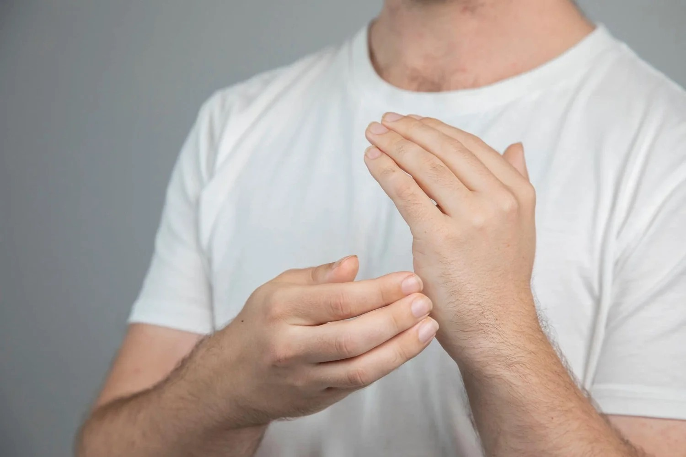

Insight aloneis oftennot enough.
Somatic specialist & trainer
When trauma, overwhelm, or old patterns are still living in the body, the work begins there.
Book a session →
Somatic specialist & trainer
When trauma, overwhelm, or old patterns are still living in the body, the work begins there.
Book a session →My approach
Most people who come to me already understand a lot about themselves. They can name the pattern. They can tell the story. But insight has not yet become change. Something in the system is still holding it.
 I
IOnline & Harley Street
For thoughtful, self-aware people carrying trauma, grief, anxiety or patterns that haven't shifted through talking.
From £80 →
IIFor practitioners
Accredited Evidence-Based EFT certification and a 10-week Focusing training, online.
Next intake May → III
IIIWriting
Essays on somatic therapy, Focusing and EFT, and the Pneumasoma newsletter.
Read →How I work
At the centre of my work is Focusing, developed by Eugene Gendlin through research with Carl Rogers into what actually helps therapy lead to change. Change comes when a person can pause, sense into their own lived experience, and stay with something there before it is fully formed or explained.
I also draw on Evidence-Based EFT, IFS parts work, and somatic approaches, but these sit inside a larger process.
People who are looking for something more than generic advice or surface-level coping. Often people who have had therapy before and know that, while it helped, something deeper has not shifted. Some come carrying spiritual, religious or existential material, and want it taken seriously without being reduced or dramatised.
Work with homeless young people, survivors of torture and trauma from refugee backgrounds, Indigenous communities, and professionals in high-risk environments: work that had to hold up under real pressure.
Not a psychologist; no diagnosis. Practising within a clear scope, with ongoing supervision.
Working with the deeper process in a person, not just the method
Taught by the only accredited EBEFT trainer currently based in the UK and EU. £497, with payment plans and scholarships.
RegisterSmall group, 1:1 time, paired Focusing exchanges. For individuals and practitioners across the UK, Europe and Australia. £597.
EnquireWhat others have said
“Mitch gently led me from exactly where I was into much deeper parts of my experience. The work felt deeper than usual, and genuinely powerful.”Emily
“His observational skills are exceptional, and even over Zoom I felt deeply understood and guided.”Henry
“Mitch is a nurturing trainer who creates a supportive and non-threatening environment in which to learn new skills.”Seema, psychologist
Let’s work together
Online, or in person on Harley Street, London. Sliding-scale places available. Questions: Mitch@becomeproject.com.au